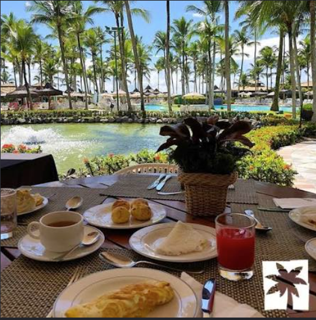
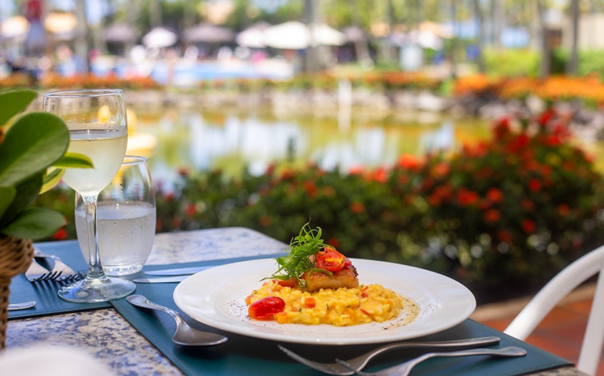
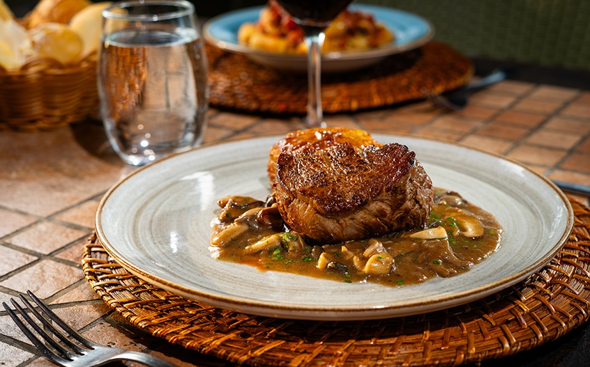
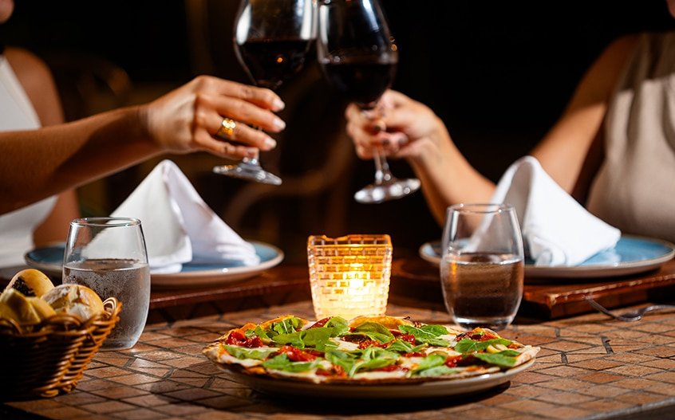
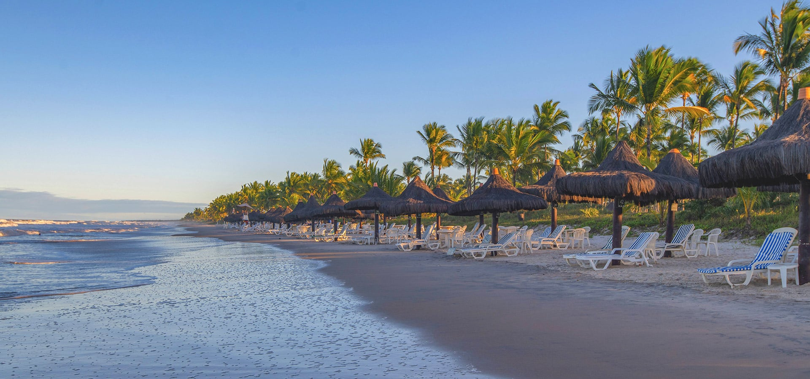
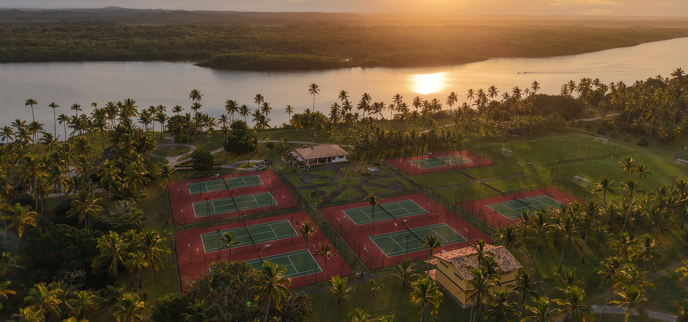
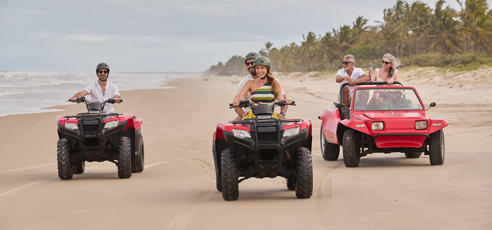
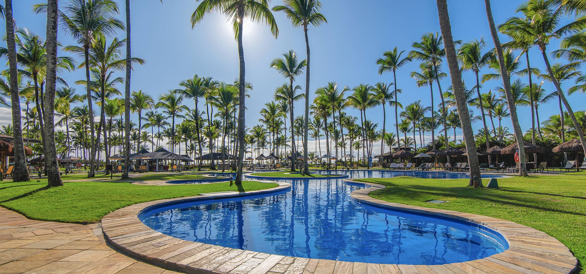
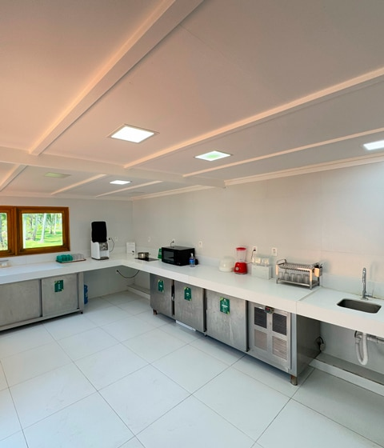

Aratu
Cozinha baiana e frutos do mar em um jantar à la carte, em ambiente rústico e acolhedor.
 Cris & Vini
Cris & Vini

CRIS & VINI · 22—25 ABRIL 2027
Dias de ilha, mar, sabores baianos e momentos para celebrar juntos.
BAHIA · ILHA DE COMANDATUBA
No litoral sul da Bahia, a Ilha de Comandatuba, no município de Una, será o cenário dos nossos dias de celebração. Entre coqueiros, jardins tropicais, piscinas e mar, o resort reúne natureza e conforto para vivermos juntos uma experiência especial.
HOSPEDAGEM
Queremos que vocês aproveitem esses dias especiais conosco! Por isso, Cris e Vini organizaram uma condição exclusiva de hospedagem para os convidados do casamento. O casal está contribuindo para oferecer uma tarifa especial a quem deseja celebrar esses dias conosco.
As reservas deverão ser feitas diretamente pelo site oficial do Hotel Transamerica Comandatuba, utilizando um cupom exclusivo enviado individualmente por Cris e Vini. Como o benefício é exclusivo, o cupom não será divulgado publicamente neste site. Entre em contato com o casal para recebê-lo antes de realizar sua reserva.
Acessar o site oficial do resort ↗TARIFAS ESPECIAIS · POR QUARTO / DIÁRIA
Valores com impostos incluídos. Todos os valores são por quarto, por diária — não por pessoa.
PEQUENOS CONVIDADOS
Na mesma acomodação dos pais, até duas crianças de 0 a 11 anos e 11 meses têm hospedagem cortesia, respeitando a capacidade máxima da categoria escolhida.
SABORES DA ILHA
A experiência all-inclusive contempla alimentos e bebidas em todos os pontos de consumo do resort — restaurantes, bares e quiosques. Ao longo do dia, estão incluídos café da manhã, almoço, lanches, petiscos, chá da tarde, jantar e opções para a madrugada, além de bebidas alcoólicas e não alcoólicas. Assim, cada momento pode ser aproveitado sem preocupação com a conta de cada consumo.

PARA COMEÇAR BEM O DIA
Pães variados, frutas, bolos, doces típicos, tapiocas, frios, queijos, iogurtes, cereais e bebidas para começar o dia com calma — e energia para aproveitar a ilha.
RESTAURANTES
Cozinha baiana e frutos do mar em um jantar à la carte, em ambiente rústico e acolhedor.

Café da manhã completo e buffet de jantar com noites temáticas nacionais e internacionais.

Jantar à la carte com inspiração mediterrânea, entre a piscina de borda infinita e a praia.

Pizzas artesanais preparadas em forno à lenha, para um jantar descontraído.

Petiscos, drinks e sabores baianos durante o dia, incluindo acarajé e cocadas no Quiosque da Baiana.

Restaurante infantil com refeições equilibradas e pratos familiares, como arroz, feijão, purês, proteínas e massas.
OPEN BAR & PETISCOS
Entre um mergulho e outro, escolha seu lugar favorito para relaxar com uma bebida. O open bar all-inclusive inclui bebidas sem álcool — água mineral com e sem gás, água de coco, sucos, refrigerantes, cafés e chás — e opções alcoólicas como cervejas, chopes, vinhos, espumantes, destilados e uma carta variada de coquetéis. Entre os drinks divulgados pelo resort estão caipirinha, caipiroska, mojito, margarita, piña colada, Aperol Spritz, Moscow Mule, Negroni e Gin Tônica Comandatuba.
Os bares estão distribuídos por diferentes áreas do resort, da piscina à praia, para acompanhar os momentos de descanso, os petiscos e os encontros ao longo do dia. A seleção de marcas e itens pode variar conforme o fornecimento.

VIDA NA ILHA
Além da praia e das piscinas, o resort oferece uma programação de lazer para diferentes ritmos: movimento, esportes, diversão em família ou simplesmente tempo para relaxar.

Um convite para caminhar pela areia, aproveitar o mar e curtir o cenário tropical. O material do resort também apresenta atividades náuticas, como caiaque e stand-up paddle, sujeitas à disponibilidade.

Academia, bicicleta indoor, alongamento, treinamento funcional, hidroginástica recreativa, futebol, tênis e atividades esportivas fazem parte das opções de lazer divulgadas.

Para quem gosta de explorar, há opções como arco e flecha, caminhadas ao pôr do sol, passeios de bicicleta e experiências de aventura. Passeios de buggy e quadriciclo podem ser contratados à parte.

A programação pode incluir música e DJ, quiz na piscina, torneios, jogos recreativos, bingo e atividades conduzidas pela equipe de recreação.
A programação é organizada pelo resort e pode mudar conforme o dia, a temporada e as condições locais. Algumas experiências e passeios são opcionais e podem ter custo adicional. Consulte a programação atualizada durante a hospedagem.

PARA QUEM VIAJA COM BEBÊS
O resort disponibiliza uma cozinha do bebê aberta 24 horas, com acesso por meio da pulseira de hóspede. O espaço conta com liquidificador, esterilizador de mamadeiras, fogão de indução, micro-ondas, chaleira elétrica e panelas.
Também há alguns alimentos básicos disponíveis, como frutas, leite em pó, amido de milho, aveia, cereais infantis, leite líquido, leite sem lactose e água mineral, entre outros itens.
PLANEJE SUA ESTADIA
Consulte o site oficial do resort para ver fotos, informações atualizadas, acomodações e detalhes da experiência all-inclusive.